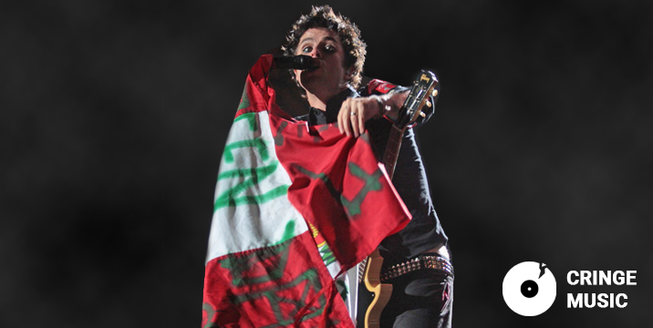

Green Day en Lima - “Una noche sui generis en la que el punk conquistó San Marcos”expand_circle_down
Cerrar close
- La emblemática banda californiana regresó tras siete años, presentándose ante más de 22 000 personas en una noche electrizante.
- Billie Joe Armstrong se detuvo en varias ocasiones para alentar a la selección peruana, gritando “¡Perú va a ganar!” y ondeando una camiseta nacional.
- Tres fanáticos subieron al escenario: uno tocó la guitarra en “Know Your Enemy” y otro interpretó “Jesus of Suburbia”, recibiendo la guitarra como recuerdo.